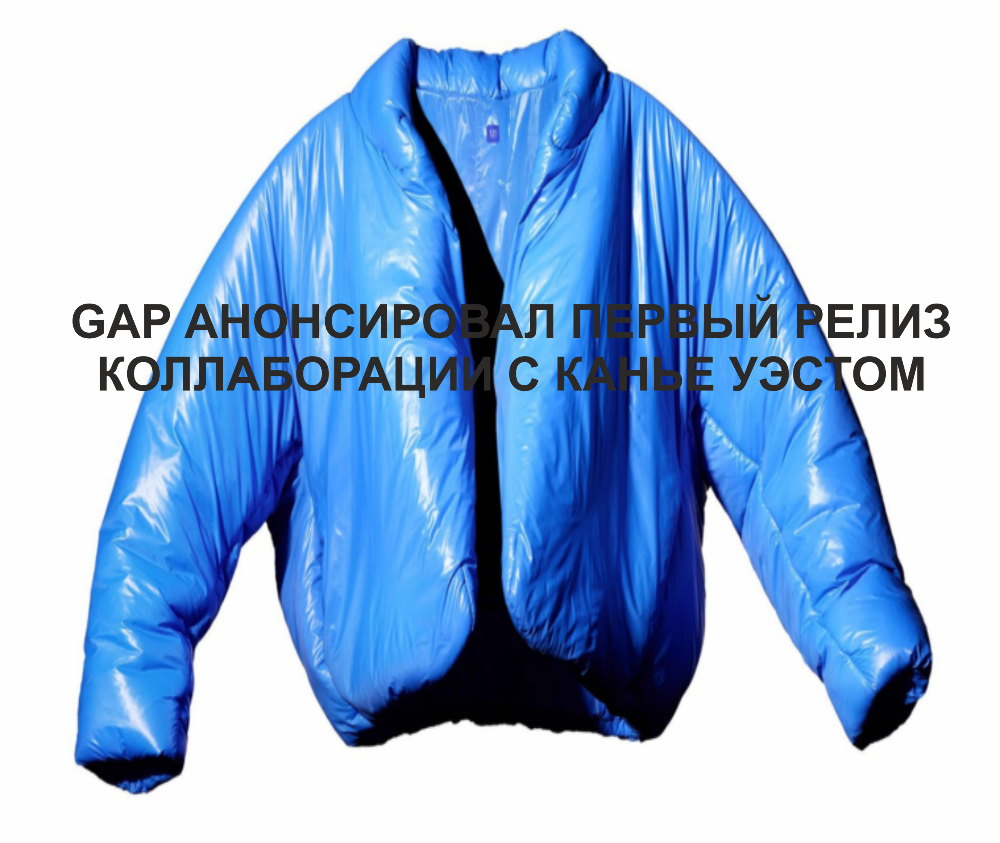

Релизы
Популярные


Популярные
SUPREME И THE NORTH FACE ПОСВЯТИЛИ КОЛЛЕКЦИЮ FALL/WINTER СТАТУЕ СВОБОДЫ
GAP АНОНСИРОВАЛ ПЕРВЫЙ РЕЛИЗ КОЛЛАБОРАЦИИ С КАНЬЕ УЭСТОМ
КОЛЛЕКЦИЯ DIOR SPRING/SUMMER 2022 MENSWEAR